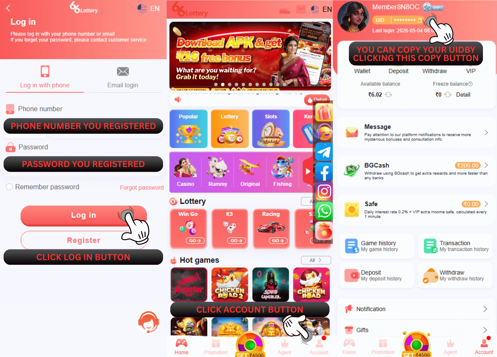
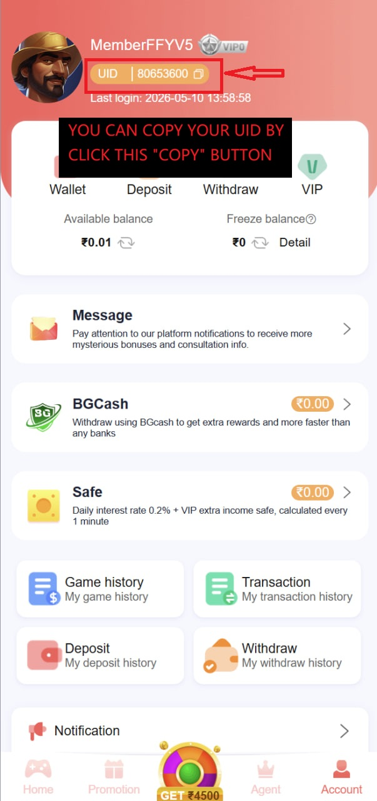

66 Lottery आईडी अकाउंट कैसे चेक करें
प्रश्न: मैं अपनी 66 Lottery खाता आईडी कैसे जांचूं?
उ: अपने 66 Lottery खाते की जांच करने के लिए आप इसे ढूंढने के लिए इस चरण का पालन कर सकते हैं
1. इस लिंक https://www.66lottery.vip/ का उपयोग करके अपने खाते में लॉगिन करें
2. अपना पंजीकृत फ़ोन नंबर और पासवर्ड भरें फिर लॉगिन बटन दबाएँ
3. खाता मेनू दबाएँ
4. प्रोफ़ाइल के शीर्ष पर आपका आईडी नंबर है

प्रश्न: अपना 66 Lottery ID अकाउंट कैसे कॉपी करें?
उ: आईडी खाते को कॉपी करने के लिए 66 Lottery, आपको बस आईडी खाते के बगल में कॉपी बटन दबाना होगा
